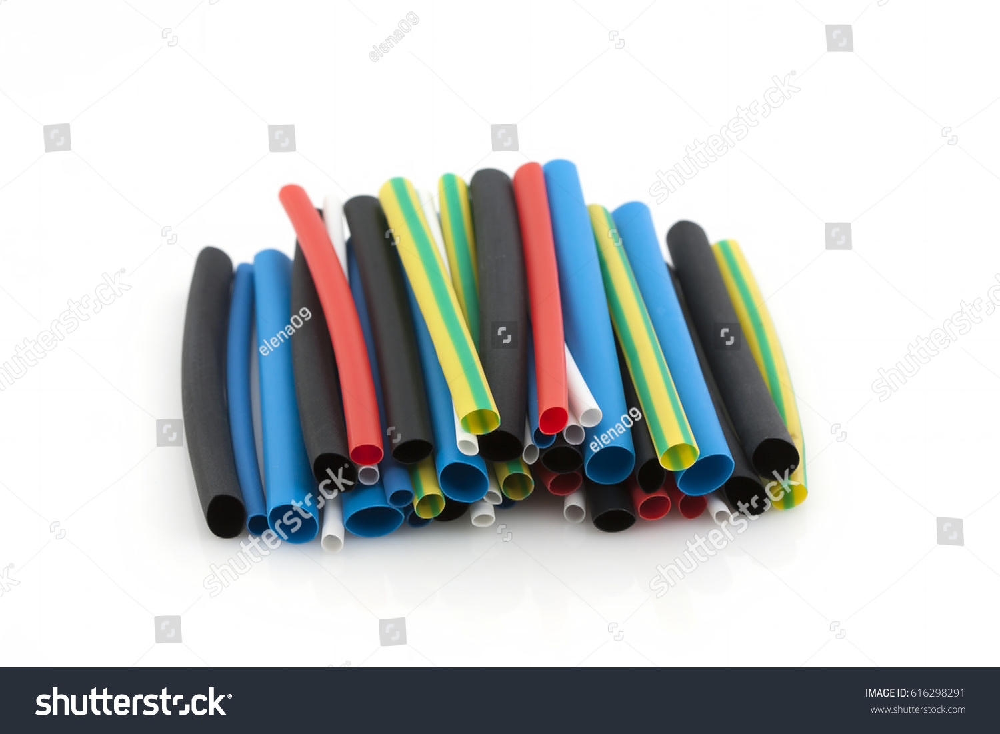

What is a Sleeve?
A sleeve in electronics refers to a protective covering or insulator used to prevent contact with conductive parts, to provide mechanical protection, or to bundle multiple wires together. They are commonly used around wires, cables, and pins in electronic components to ensure safety and reliability.

Types of Sleeves
Heat Shrink Sleeves:
These are sleeves made from a material that shrinks when exposed to heat. They are used to insulate and protect components such as wires and connectors.
Uses: Electrical insulation, mechanical protection, strain relief, and environmental protection.
Protective Sleeves:
These sleeves are designed to provide physical protection to sensitive components or wires from wear, abrasion, or chemical exposure.
Uses: Protection against mechanical damage, shielding from chemicals and UV rays.
Wire Sleeves:
Wire sleeves are often used to bundle multiple wires together, providing organization and protection. They can be made of materials such as nylon or polyester for added durability.
Uses: Organizing wires, protecting against abrasion and physical damage.
Applications of Sleeves in Electronics
Sleeves are used in many areas of electronics for various purposes:
- Electrical insulation of wires and components
- Mechanical protection to prevent physical damage
- Bundling and organizing wires
- Environmental protection against moisture, chemicals, and UV exposure
ஸ்லீவ் (Sleeve)
மின்னணுவியல் கூறுகளில், ஸ்லீவ் என்பது கம்பிகளுக்கு பாதுகாப்பு அல்லது வடிவமைப்பை கொடுக்க பயன்படுத்தப்படும் ஒரு கவரிங் அல்லது இன்சுலேட்டர் ஆகும். இது மின்கட்டமைப்புகளில் மின்சார பாகங்களைத் தவிர்க்க, இயந்திர பாதுகாப்பு அல்லது பல்வேறு கம்பிகளை ஒன்றாக சேர்க்க உதவுகிறது.
ஸ்லீவின் வகைகள்
ஹீட் ஸ்ரின்க் ஸ்லீவ் (Heat Shrink Sleeve):
இந்த ஸ்லீவுகள் வெப்பத்திற்கு உள்ளாக்கும்போது சுருக்கும் பொருளில் இருந்து செய்யப்பட்டவை. இது மின்கம்பிகள் மற்றும் இணைப்புகளை பாதுகாப்பதற்குப் பயன்படுத்தப்படுகிறது.
பயன்பாடுகள்: மின்சார இன்சுலேஷன், இயந்திர பாதுகாப்பு, அழுத்த உதவிகள் மற்றும் சுற்றுப்புற பாதுகாப்பு.
பாதுகாப்பு ஸ்லீவ் (Protective Sleeves):
இவை மின்கம்பிகள் அல்லது கூறுகளுக்கு உதிர்வு, துரிதம் அல்லது ரசாயனங்கள் கொண்டு ஏற்படும் காயங்களைத் தவிர்க்க பாதுகாப்பு அளிக்கும் வகையில் வடிவமைக்கப்பட்டவை.
பயன்பாடுகள்: இயந்திர சேதங்களைத் தவிர்க்க, ரசாயனங்கள் மற்றும் UV கதிர்வீச்சுகளிலிருந்து பாதுகாப்பு.
கம்பி ஸ்லீவ் (Wire Sleeves):
இந்த ஸ்லீவுகள் பல கம்பிகளை ஒன்றாக சேர்க்க உதவுகின்றன, அவை நீலோன் அல்லது பாலியஸ்டர் போன்ற பொருட்களில் இருந்து செய்யப்பட்டு பாதுகாப்பும் நிலைத்தன்மையும் தருகின்றன.
பயன்பாடுகள்: கம்பிகளை ஒழுங்கமைக்க, உறைதவிர்ப்பு மற்றும் இயந்திர சேதங்களைத் தவிர்க்க.
மின்னணுவியல் கூறுகளில் ஸ்லீவின் பயன்பாடுகள்
ஸ்லீவுகள் மின்னணு கூறுகளில் பல பயன்பாடுகளுக்கு உபயோகப்படுகின்றன:
- மின்கம்பிகளின் இன்சுலேஷன்
- இயந்திர பாதுகாப்பு மற்றும் உடைக்கப்படுதலைத் தவிர்க்க
- கம்பிகளை ஒழுங்குபடுத்துதல்
- நீர், ரசாயனங்கள் மற்றும் UV கதிர்வீச்சுகளிலிருந்து சுற்றுப்புற பாதுகாப்பு